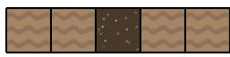
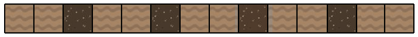
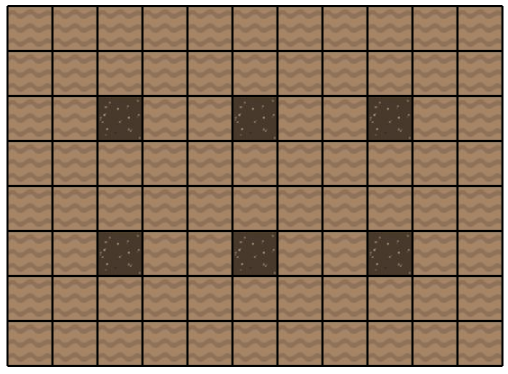
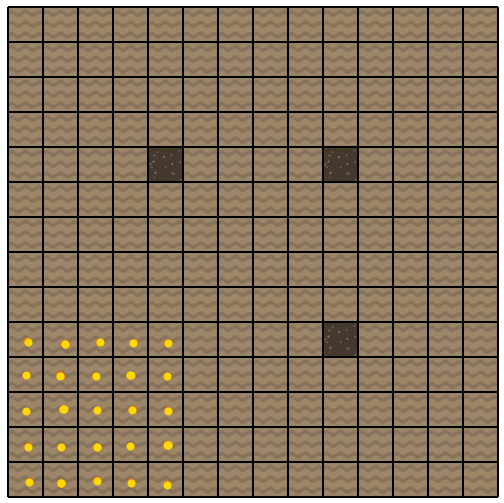
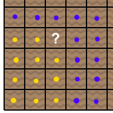
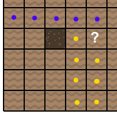
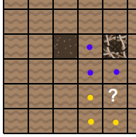
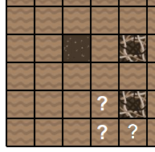

Pour trouver le terrier du premier coup, il faut creuser dans la case du milieu.

Pour trouver le terrier en seulement 4 coups, il faut creuser une case sur 3. Ainsi, on ne laisse aucune place restante pour un terrier de largeur 3.

Pour trouver le terrier en seulement 6 coups, il faut creuser sur des cases espacées de 3 les unes des autres. Ainsi, on ne laisse aucune place restante pour un terrier de dimension 3x3.

Pour commencer, on creuse sur 3 cases espacées de 5 les unes des autres, comme montrée ci-dessous.
Une fois que l'on a fait ça, on est certain que l'entrée du terrier se trouve sur l'un des points rouges dessinés ci-dessous.

Concentrons nous sur cette zone en bas à gauche. On souhaite creuser sur une case telle que, quelque soit ce que l'on trouve en creusant, on aura bien réduit le nombre de possibilités restantes.
De ce point de vue, la case contenant un point d'interrogation est intéressante :
- Si cette case contient un morceau de terrier, alors l'entrée du terrier est forcément sur l'une des 11 cases jaunes.
- Si au contraire cette case contient de la terre, alors l'entrée du terrier est forcément sur l'une des 13 cases bleues.
Cette case se révèle être de la terre (ce qui n'est pas très suprenant car le défi est programmé pour être le plus difficile possible).

On cherche alors une case qui pourra séparer en deux parties à peu près égales les possibilités restantes.
La case avec le point d'interrogation est intéressante :
- Si elle contient un morceau de terrier, alors il reste sur l'une des 7 cases jaunes.
- Si elle contient de la terre, alors il reste l'une des 5 cases bleues.
On y trouve un morceau de terrier.

On continue ainsi, en creusant sur la case marquée avec le point d'interrogation, de sorte à réduire à deux groupes de 3 possibilités.

Pour terminer, on n'a plus d'autre choix que de tester les 3 possibilités restantes.

Avec cette stratégie, quelque soit les réponses que l'on obtient, on termine toujours en moins de 9 coups.